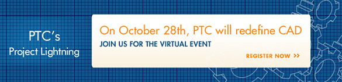

25 yýl önce piyasaya sunduðu ve devrim niteliðinde olan CAD teknolojilerine 20 yýldýr yön veren, CAD ve PLM sektörünün lideri PTC, 28 Ekim 2010 günü tüm dünyaya ayný anda sunacaðý vizyon, strateji ve teknoloji tanýtýmý ile, önümüzdeki yýllara yön verecek, CAD teknolojisini yeniden tanýmlýyor.
Ülkemizi 21 yýl önce ilk CAD/CAM teknolojileri ile tanýþtýran ve bugüne kadar geliþimine önemli katkýlar saðlayan bir kuruluþ olarak; ülkemiz endüstri ve imalat sektörünün rekabetçi gücüne çok önemli katkýlar saðlayacaðýna inandýðýmýz, devrim niteliðindeki bu yeni teknoloji tanýtýmýyla ilgili etkinlik konusunda sizleri bilgilendirmeyi görev kabul ediyoruz.
Tüm dünyada ayný anda internet üzerinden canlý yayýnlanacak "Project Lightning" vizyon ve teknoloji tanýtýmý 28 Ekim 2010, Perþembe günü, 17:00 – 19:00 saatleri arasýnda gerçekleþtirilecek olup, Project Lightning Kayýt Formu doldurularak izlenebilecektir. Ýlave bilgi için: www.ptc.com
Saygýlarýmýzla,
ÝNFOMA GROUP | ÝNFORMATÝK A.Þ.

You're Invited
October 28th, 2010 -- Witness the New Beginning...
PTC will unveil Project Lightning, our landmark initiative that will redefine CAD. Be the first to witness the vision, the strategy and the product that will transform the mechanical CAD marketplace.Learn how PTC will:
- Solve the big problems in mechanical CAD, including fundamental ease-of-use, interoperability, and assembly management
- Take a fresh new approach to the solutions, building on PTC's unique assets
- Deliver a scalable, interoperable, open, and easy-to-use set of mechanical design applications
- Provide the right-size solution for each participant in the design process at the right time
- Offer full upwards compatibility with the PTC products our customers are using today (Pro/ENGINEER®, CoCreate®, ProductView®, Windchill®, etc.)
See for yourself how the company who revolutionized CAD is reinventing things once again. By attending the virtual event you will be one of the first to witness the vision, the strategy and see the product that will transform the mechanical CAD marketplace. Register Now!
|